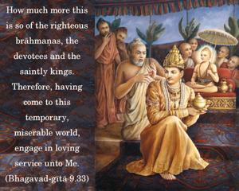
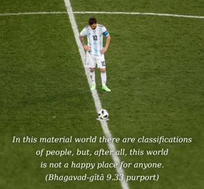
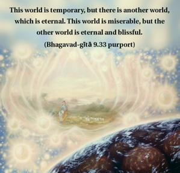

How much more this is so of the righteous brāhmaṇas, the devotees and the saintly kings. Therefore, having come to this temporary, miserable world, engage in loving service unto Me.



In this material world there are classifications of people, but, after all, this world is not a happy place for anyone. It is clearly stated here, anityam asukhaṁ lokam: this world is temporary and full of miseries, not habitable for any sane gentleman. This world is declared by the Supreme Personality of Godhead to be temporary and full of miseries. Some philosophers, especially Māyāvādī philosophers, say that this world is false, but we can understand from Bhagavad-gītā that the world is not false; it is temporary. There is a difference between temporary and false. This world is temporary, but there is another world, which is eternal. This world is miserable, but the other world is eternal and blissful.
Arjuna was born in a saintly royal family. To him also the Lord says, “Take to My devotional service and come quickly back to Godhead, back home.” No one should remain in this temporary world, full as it is with miseries. Everyone should attach himself to the bosom of the Supreme Personality of Godhead so that he can be eternally happy. The devotional service of the Supreme Lord is the only process by which all problems of all classes of men can be solved. Everyone should therefore take to Kṛṣṇa consciousness and make his life perfect.